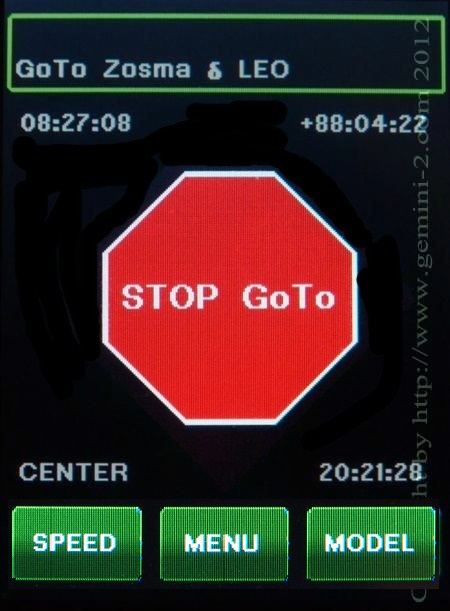

|
Gemini-2 and Gemini-1 Telescope Mount Controllers Website and Tutorials |
| Interactive Hand-Controller Menus - click on green button to Navigate |
|  | The mount is still slewing to target. Notice that the DEC is approaching 90° and is going to do a Meridian Flip. The mount is now slewing to the target. When the slewing is finished you will receive a message that GOTO DONE: Center Object. It will take about 10 seconds for the mount to reach it target. If you cannot wait, Hit any of the 4 directional buttons to be taken to the next screen. This action is not what will happen with the mount, I only provided it to allow for you to get to the next screen sooner. On Firmware hand controller firmware dated July 7 or later the Goto button has been renamed Menu. |